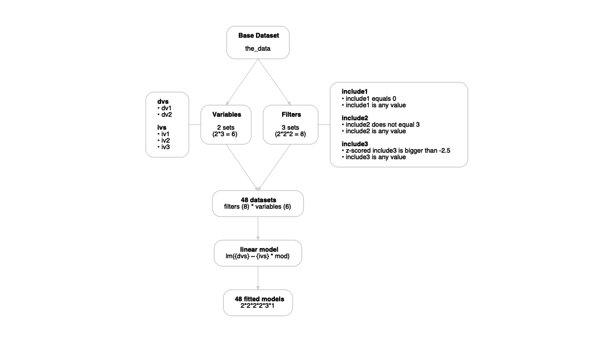

The goal of multitool is to provide a set of tools for designing and running multiverse-style analyses. My goal with this package is to create an incremental workflow for slowly building up, keeping track of, and unpacking multiverse analyses and results.
I designed multitool to help users take a single use case (e.g., a single analysis pipeline) and expand it into a workflow to include alternative versions of the same analysis.
For example, imagine you would like to take some data, remove outliers, transform variables, run a linear model, do a post-hoc analysis, and plot the results. multitool can take theses tasks and transform them into a specification blueprint, which provides instructions for running your analysis pipeline.
The functions were designed to play nice with the tidyverse and require using the base R pipe |>. This makes it easy to quickly convert a single analysis into a multiverse analysis.
Basic components
My vision of a multiverse workflow contains three parts.
- Base data: original dataset waiting for further processing
- specification blueprint: aka specification grid. This a blueprint/map/recipe or whatever you want to call it. These are the instructions for what to do.
- Multiverse results: a table of results after feeding the base data to the blueprint.
A defining feature of multitool is that it saves pipeline code. This allows the user to grab the code that produces a result and inspect it for accuracy, errors, or simply for peace of mind. By quickly grabbing code, the user can iterate between creating their blueprint and checking that the code works as intended.
multitool allows the user to model data however they’d like. The user is responsible for loading the relevant modeling packages. Regardless of your model choice, multitool will capture your code and build a pipeline.
Finally, multiverse analyses were originally intended to look at how model parameters shift as a function of arbitrary analysis decisions. However, any computation might change depending on how you slice and dice the data. For this reason, I also built functions for computing descriptive, correlation, and reliability analysis alongside a particular modelling pipeline.
Installation
You can install the development version of multitool from GitHub with:
# install.packages("devtools")
devtools::install_github("ethan-young/multitool")The base data
Image we have some data with several predictor variables, moderators, covariates, and dependent measures. We want to know if our predictors (ivs) interact with our moderators (mods) to predict the outcome (dvs).
But we have three versions of our predictor that measuring the same construct in a different way.
In addition, because we collected messy data from the real world (not really but let’s pretend), we have some idea of exclusions we might need to make (e.g., include1, include2, include3).
Create a blueprint
Say we don’t know much about this new and exciting area of research.
We want to maximize our knowledge but we also want to be systematic. One approach would be to specify a reasonable analysis pipeline. Something that looks like the following:
# Filter out exclusions
filtered_data <-
the_data |>
filter(
include1 == 0, # --
include2 != 3, # Exclusion criteria
scale(include3) > -2.5 # --
)
# Model the data
my_model <- lm(dv1 ~ iv1 * mod, data = filtered_data)
# Check the results
my_results <- broom::tidy(my_model)But what if there are valid alternative alternatives to this pipeline?
For example, using iv2 instead of iv1 or only using two exclusion criteria instead of three? A sensible approach would be to copy the code above, paste it, and edit with different decisions.
This quickly become tedious. It adds many lines of code, many new objects, and is difficult to keep track of in a systematic way. Enter multitool.
With multitool, the above analysis pipeline can be transformed into a grid – a specification blueprint – for exploring all combinations of sensible data decisions in a pipeline. It was designed to leverage already written code (e.g., the filter statement above) to create a multiverse of data analysis pipelines.
Filtering specifications
Our example above has three exclusion criteria. If we don’t know which are important, for example, because they are based on arbitrary ‘rules of thumb’ (that may or may not have inherent wisdom) or we don’t know if including/excluding these cases is valid, we can generate all combinations:
the_data |>
add_filters(include1 == 0, include2 != 3, scale(include3) > -2.5)
#> # A tibble: 6 × 3
#> type group code
#> <chr> <chr> <chr>
#> 1 filters include1 include1 == 0
#> 2 filters include1 include1 %in% unique(include1)
#> 3 filters include2 include2 != 3
#> 4 filters include2 include2 %in% unique(include2)
#> 5 filters include3 scale(include3) > -2.5
#> 6 filters include3 include3 %in% unique(include3)The output above is a simple tibble (i.e., data.frame) containing three columns.
Each row is a possible filter: the type column refers to the type of blueprint specification (see below for types other than filters), the group refers to the variable in the base data frame (in our case the_data) for which the filter applies, and the code column contains the code needed to execute the filter.
For filtering decisions (e.g., exclusion criteria), a ‘do nothing’ alternative is always generated.
For example, perhaps some observations belong to a subgroup, include1 == 1. We may or may not have good reason to exclude these cases (this depends on the specific situation).
But imagine that we don’t know if we should include them or not. When include1 == 1 is added to add_filters(), the ‘do nothing’ alternative include1 %in% unique(include1) is automatically generated so you can compare including versus excluding cases based on a criterion.
Adding alternative analysis variables
Most multiverse-style analyses explore a range of exclusion criteria and their alternatives. However, sometimes alternative versions of a variable are also included.
In the social sciences, it is fairly common to have many measures of roughly the same construct (i.e., measured variable). For example, a happiness researcher might measure positive mood, life satisfaction, and/or a single item measuring happiness (e.g., ‘how happy do your feel?’).
If you want to explore the output of your pipeline with differing versions of a variable, you can use add_variables().
the_data |>
add_variables(var_group = "ivs", iv1, iv2, iv3)
#> # A tibble: 3 × 3
#> type group code
#> <chr> <chr> <chr>
#> 1 variables ivs iv1
#> 2 variables ivs iv2
#> 3 variables ivs iv3The output above generates the same tibble as add_filters(). Each row is a particular decision to use a particular variable in your pipeline.
In contrast to filter, however, you need to tell add_variables() what to call each set of variables with the var_group argument. This is how multitool knows that each variable name in the code column is a different alternative of a larger set.
Here, var_group = "ivs" indicates that iv1, iv2, iv3 are all different versions of ivs. I used “ivs” as way of indicating to myself that these are alternative versions of my main independent variable.
You can add as many variable sets as you want. For example, we might also want to analyze our two versions of the outcome, dv1 and dv2.
the_data |>
add_variables(var_group = "ivs", iv1, iv2, iv3) |>
add_variables(var_group = "dvs", dv1, dv2)
#> # A tibble: 5 × 3
#> type group code
#> <chr> <chr> <chr>
#> 1 variables ivs iv1
#> 2 variables ivs iv2
#> 3 variables ivs iv3
#> 4 variables dvs dv1
#> 5 variables dvs dv2Building up the blueprint
You can harness the real power of multitool by piping specification statements. For example, perhaps we want to explore our exclusion criteria alternatives across different versions of our predictor and outcome variables. We can simply pipe new blueprint specifications into each other like so:
the_data |>
add_filters(include1 == 0, include2 != 3, scale(include3) > -2.5) |>
add_variables(var_group = "ivs", iv1, iv2, iv3) |>
add_variables(var_group = "dvs", dv1, dv2)
#> # A tibble: 11 × 3
#> type group code
#> <chr> <chr> <chr>
#> 1 filters include1 include1 == 0
#> 2 filters include1 include1 %in% unique(include1)
#> 3 filters include2 include2 != 3
#> 4 filters include2 include2 %in% unique(include2)
#> 5 filters include3 scale(include3) > -2.5
#> 6 filters include3 include3 %in% unique(include3)
#> 7 variables ivs iv1
#> 8 variables ivs iv2
#> 9 variables ivs iv3
#> 10 variables dvs dv1
#> 11 variables dvs dv2Notice that we now have a specification blueprint with both exclusion alternatives and variable alternatives.
Adding a model
The whole point of building a specification blueprint is to eventually feed it to a model and examine the results.
You can add a model to your blueprint by using add_model(). I designed add_model() so the user can simply paste a model function. For example, our call to lm() can be simply pasted into add_model(). Make sure to give your model a label with the model_desc argument.
the_data |>
add_filters(include1 == 0, include2 != 3, scale(include3) > -2.5) |>
add_variables(var_group = "ivs", iv1, iv2, iv3) |>
add_variables(var_group = "dvs", dv1, dv2) |>
add_model("linear model", lm(dv1 ~ iv1 * mod))
#> # A tibble: 12 × 3
#> type group code
#> <chr> <chr> <chr>
#> 1 filters include1 include1 == 0
#> 2 filters include1 include1 %in% unique(include1)
#> 3 filters include2 include2 != 3
#> 4 filters include2 include2 %in% unique(include2)
#> 5 filters include3 scale(include3) > -2.5
#> 6 filters include3 include3 %in% unique(include3)
#> 7 variables ivs iv1
#> 8 variables ivs iv2
#> 9 variables ivs iv3
#> 10 variables dvs dv1
#> 11 variables dvs dv2
#> 12 models linear model lm(dv1 ~ iv1 * mod)Above, the model is completely unquoted. It also has no data argument. This is intentional; multitool is tracking the base dataset along the way (so you don’t have to). Note that you can still quote the model formula, if that is more your style.
the_data |>
add_filters(include1 == 0, include2 != 3, scale(include3) > -2.5) |>
add_variables(var_group = "ivs", iv1, iv2, iv3) |>
add_variables(var_group = "dvs", dv1, dv2) |>
add_model("lm(dv1 ~ iv1 * mod)")
#> # A tibble: 12 × 3
#> type group code
#> <chr> <chr> <chr>
#> 1 filters include1 "include1 == 0"
#> 2 filters include1 "include1 %in% unique(include1)"
#> 3 filters include2 "include2 != 3"
#> 4 filters include2 "include2 %in% unique(include2)"
#> 5 filters include3 "scale(include3) > -2.5"
#> 6 filters include3 "include3 %in% unique(include3)"
#> 7 variables ivs "iv1"
#> 8 variables ivs "iv2"
#> 9 variables ivs "iv3"
#> 10 variables dvs "dv1"
#> 11 variables dvs "dv2"
#> 12 models lm(dv1 ~ iv1 * mod) ""To make sure your add_variables() works properly, add_model() was designed to interpret glue::glue() syntax. For example:
the_data |>
add_filters(include1 == 0, include2 != 3, scale(include3) > -2.5) |>
add_variables(var_group = "ivs", iv1, iv2, iv3) |>
add_variables(var_group = "dvs", dv1, dv2) |>
add_model("linear model",lm({dvs} ~ {ivs} * mod))
#> # A tibble: 12 × 3
#> type group code
#> <chr> <chr> <chr>
#> 1 filters include1 include1 == 0
#> 2 filters include1 include1 %in% unique(include1)
#> 3 filters include2 include2 != 3
#> 4 filters include2 include2 %in% unique(include2)
#> 5 filters include3 scale(include3) > -2.5
#> 6 filters include3 include3 %in% unique(include3)
#> 7 variables ivs iv1
#> 8 variables ivs iv2
#> 9 variables ivs iv3
#> 10 variables dvs dv1
#> 11 variables dvs dv2
#> 12 models linear model lm({dvs} ~ {ivs} * mod)This allows multitool to insert the correct version of each variable specified in a add_variables() step. Make sure to use embrace the variable with the var_group argument from add_variables(), for example add_model(lm({dvs} ~ {ivs} * mod)). Here, {dvs} and ivs tells multitool to insert the current version of the ivs and dvs into the model.
Finalizing the specification blueprint
There are two steps in finalizing your bluerpint. The first is to visualize your pipeline with a graph. This is optional, but I think it is helpful.
You can automate making a chart with blueprint(). Feed your pipeline to blueprint() to see a chart of your multiverse pipeline plan:
full_pipeline <-
the_data |>
add_filters(include1 == 0, include2 != 3, scale(include3) > -2.5) |>
add_variables(var_group = "ivs", iv1, iv2, iv3) |>
add_variables(var_group = "dvs", dv1, dv2) |>
add_model("linear model", lm({dvs} ~ {ivs} * mod))
blueprint(full_pipeline)
The final step in making your blueprint is expanding all your specifications into all possible combinations. You can do this by calling expand_decisions() at the end of your blueprint pipeline:
expanded_pipeline <- expand_decisions(full_pipeline)
expanded_pipeline
#> # A tibble: 48 × 4
#> decision variables filters models
#> <chr> <list> <list> <list>
#> 1 1 <tibble [1 × 2]> <tibble [1 × 3]> <tibble [1 × 2]>
#> 2 2 <tibble [1 × 2]> <tibble [1 × 3]> <tibble [1 × 2]>
#> 3 3 <tibble [1 × 2]> <tibble [1 × 3]> <tibble [1 × 2]>
#> 4 4 <tibble [1 × 2]> <tibble [1 × 3]> <tibble [1 × 2]>
#> 5 5 <tibble [1 × 2]> <tibble [1 × 3]> <tibble [1 × 2]>
#> 6 6 <tibble [1 × 2]> <tibble [1 × 3]> <tibble [1 × 2]>
#> 7 7 <tibble [1 × 2]> <tibble [1 × 3]> <tibble [1 × 2]>
#> 8 8 <tibble [1 × 2]> <tibble [1 × 3]> <tibble [1 × 2]>
#> 9 9 <tibble [1 × 2]> <tibble [1 × 3]> <tibble [1 × 2]>
#> 10 10 <tibble [1 × 2]> <tibble [1 × 3]> <tibble [1 × 2]>
#> # … with 38 more rowsThe result is an expanded tibble with 1 row per unique decision and columns for each major blueprint category. In our example, we have alternative variables (predictors and outcomes), filters (three exclusion alternatives), and a model to run.
Note that we have 3 exclusions (each with two combinations), 3 versions of our predictor, and 2 versions of our outcome. This means our blueprint should have 2*2*2*3*2 rows.
2*2*2*3*2 == nrow(full_pipeline)
#> [1] FALSEOur blueprint uses list columns to organize information. You can view each list column by using tidyr::unnest(<column name>). For example, we can look at the filters:
expanded_pipeline |> unnest(filters)
#> # A tibble: 48 × 6
#> decision variables include1 include2 include3 models
#> <chr> <list> <chr> <chr> <chr> <list>
#> 1 1 <tibble [1 × 2]> include1 == 0 include2 != 3 scale(include… <tibble>
#> 2 2 <tibble [1 × 2]> include1 == 0 include2 != 3 scale(include… <tibble>
#> 3 3 <tibble [1 × 2]> include1 == 0 include2 != 3 scale(include… <tibble>
#> 4 4 <tibble [1 × 2]> include1 == 0 include2 != 3 scale(include… <tibble>
#> 5 5 <tibble [1 × 2]> include1 == 0 include2 != 3 scale(include… <tibble>
#> 6 6 <tibble [1 × 2]> include1 == 0 include2 != 3 scale(include… <tibble>
#> 7 7 <tibble [1 × 2]> include1 == 0 include2 != 3 include3 %in%… <tibble>
#> 8 8 <tibble [1 × 2]> include1 == 0 include2 != 3 include3 %in%… <tibble>
#> 9 9 <tibble [1 × 2]> include1 == 0 include2 != 3 include3 %in%… <tibble>
#> 10 10 <tibble [1 × 2]> include1 == 0 include2 != 3 include3 %in%… <tibble>
#> # … with 38 more rowsOr we could look at the models:
expanded_pipeline |> unnest(models)
#> # A tibble: 48 × 5
#> decision variables filters model model_meta
#> <chr> <list> <list> <chr> <chr>
#> 1 1 <tibble [1 × 2]> <tibble [1 × 3]> lm(dv1 ~ iv1 * mod) linear model
#> 2 2 <tibble [1 × 2]> <tibble [1 × 3]> lm(dv2 ~ iv1 * mod) linear model
#> 3 3 <tibble [1 × 2]> <tibble [1 × 3]> lm(dv1 ~ iv2 * mod) linear model
#> 4 4 <tibble [1 × 2]> <tibble [1 × 3]> lm(dv2 ~ iv2 * mod) linear model
#> 5 5 <tibble [1 × 2]> <tibble [1 × 3]> lm(dv1 ~ iv3 * mod) linear model
#> 6 6 <tibble [1 × 2]> <tibble [1 × 3]> lm(dv2 ~ iv3 * mod) linear model
#> 7 7 <tibble [1 × 2]> <tibble [1 × 3]> lm(dv1 ~ iv1 * mod) linear model
#> 8 8 <tibble [1 × 2]> <tibble [1 × 3]> lm(dv2 ~ iv1 * mod) linear model
#> 9 9 <tibble [1 × 2]> <tibble [1 × 3]> lm(dv1 ~ iv2 * mod) linear model
#> 10 10 <tibble [1 × 2]> <tibble [1 × 3]> lm(dv2 ~ iv2 * mod) linear model
#> # … with 38 more rowsNotice that, with the glue::glue() syntax, different versions of our predictors and outcomes were inserted appropriately. You can check their correspondence by using unnest() on both the models and variable list columns:
expanded_pipeline |> unnest(c(variables, models))
#> # A tibble: 48 × 6
#> decision ivs dvs filters model model_meta
#> <chr> <chr> <chr> <list> <chr> <chr>
#> 1 1 iv1 dv1 <tibble [1 × 3]> lm(dv1 ~ iv1 * mod) linear model
#> 2 2 iv1 dv2 <tibble [1 × 3]> lm(dv2 ~ iv1 * mod) linear model
#> 3 3 iv2 dv1 <tibble [1 × 3]> lm(dv1 ~ iv2 * mod) linear model
#> 4 4 iv2 dv2 <tibble [1 × 3]> lm(dv2 ~ iv2 * mod) linear model
#> 5 5 iv3 dv1 <tibble [1 × 3]> lm(dv1 ~ iv3 * mod) linear model
#> 6 6 iv3 dv2 <tibble [1 × 3]> lm(dv2 ~ iv3 * mod) linear model
#> 7 7 iv1 dv1 <tibble [1 × 3]> lm(dv1 ~ iv1 * mod) linear model
#> 8 8 iv1 dv2 <tibble [1 × 3]> lm(dv2 ~ iv1 * mod) linear model
#> 9 9 iv2 dv1 <tibble [1 × 3]> lm(dv1 ~ iv2 * mod) linear model
#> 10 10 iv2 dv2 <tibble [1 × 3]> lm(dv2 ~ iv2 * mod) linear model
#> # … with 38 more rowsValidate your blueprint
A multitool specification blueprint has a special feature: it captures your code and generates analysis pipelines.
A special set of functions with the show_code_* prefix allow you to see the code that will be executed for a single pipeline. For example, we can look at our filtering code for the first decision of our blueprint:
expanded_pipeline |> show_code_filter(decision_num = 1)
#> the_data |>
#> filter(include1 == 0, include2 != 3, scale(include3) > -2.5)These functions allow you to generate the relevant code along the analysis pipeline. For example, we can look at our model pipeline for decision 17 using show_code_model(decision_num = 17):
expanded_pipeline |> show_code_model(decision_num = 17)
#> the_data |>
#> filter(include1 == 0, include2 %in% unique(include2), scale(include3) > -2.5) |>
#> lm(dv1 ~ iv3 * mod, data = _)Setting the copy argument to TRUE allows you to send the code straight to your clipboard. You can paste it into the source or console for testing/editing.
You can also run individual decisions to test that they work. See below for details about the results.
run_universe_model(expanded_pipeline, decision_num = 1)
#> # A tibble: 1 × 2
#> decision lm_fitted
#> <chr> <list>
#> 1 1 <tibble [1 × 5]>Implement your blueprint
Once you have built your full specification blueprint and feel comfortable with how the pipeline is executed, you can implement a full multiverse-style analysis.
Simply use run_multiverse(<your pipeline object>):
multiverse_results <- run_multiverse(expanded_pipeline)
#> ■■■■■■■■■■■■ 38% | ETA: 4s■■■■■■■■■■■■■■ 44% | ETA: 3s■■■■■■■■■■■■■■■ 48% |
#> ETA: 3s■■■■■■■■■■■■■■■■ 50% | ETA: 3s■■■■■■■■■■■■■■■■■ 54% | ETA:
#> 3s■■■■■■■■■■■■■■■■■■■ 58% | ETA: 3s■■■■■■■■■■■■■■■■■■■ 60% | ETA:
#> 2s■■■■■■■■■■■■■■■■■■■■ 65% | ETA: 2s■■■■■■■■■■■■■■■■■■■■■ 67% | ETA:
#> 2s■■■■■■■■■■■■■■■■■■■■■■ 71% | ETA: 2s■■■■■■■■■■■■■■■■■■■■■■■ 75% | ETA:
#> 2s■■■■■■■■■■■■■■■■■■■■■■■■ 77% | ETA: 1s■■■■■■■■■■■■■■■■■■■■■■■■■ 81% | ETA:
#> 1s■■■■■■■■■■■■■■■■■■■■■■■■■■ 83% | ETA: 1s■■■■■■■■■■■■■■■■■■■■■■■■■■■ 88% |
#> ETA: 1s■■■■■■■■■■■■■■■■■■■■■■■■■■■■ 90% | ETA: 1s■■■■■■■■■■■■■■■■■■■■■■■■■■■■■
#> 94% | ETA: 0s■■■■■■■■■■■■■■■■■■■■■■■■■■■■■■ 96% | ETA: 0s
multiverse_results
#> # A tibble: 48 × 3
#> decision specifications lm_fitted
#> <chr> <list> <list>
#> 1 1 <tibble [1 × 3]> <tibble [1 × 5]>
#> 2 2 <tibble [1 × 3]> <tibble [1 × 5]>
#> 3 3 <tibble [1 × 3]> <tibble [1 × 5]>
#> 4 4 <tibble [1 × 3]> <tibble [1 × 5]>
#> 5 5 <tibble [1 × 3]> <tibble [1 × 5]>
#> 6 6 <tibble [1 × 3]> <tibble [1 × 5]>
#> 7 7 <tibble [1 × 3]> <tibble [1 × 5]>
#> 8 8 <tibble [1 × 3]> <tibble [1 × 5]>
#> 9 9 <tibble [1 × 3]> <tibble [1 × 5]>
#> 10 10 <tibble [1 × 3]> <tibble [1 × 5]>
#> # … with 38 more rowsThe result will be another tibble with various list columns.
It will always contain a list column named specifications containing all the information you generated in your blueprint. Next, there will be one list column per model fitted, labelled with a suffix like so <function name>_fitted.
Here, we ran a lm() so our results are contained in lm_fitted.
Unpacking a multiverse analysis
There are two main ways to unpack and examine multitool results. The first is by using tidyr::unnest() (similar to unpacking the specification blueprint earlier).
Unnest
multiverse_results |> unnest(lm_fitted)
#> # A tibble: 48 × 7
#> decision specifications lm_code lm_tidy lm_gla…¹ lm_war…² lm_mes…³
#> <chr> <list> <glue> <list> <list> <list> <list>
#> 1 1 <tibble [1 × 3]> the_data |> fi… <tibble> <tibble> <tibble> <tibble>
#> 2 2 <tibble [1 × 3]> the_data |> fi… <tibble> <tibble> <tibble> <tibble>
#> 3 3 <tibble [1 × 3]> the_data |> fi… <tibble> <tibble> <tibble> <tibble>
#> 4 4 <tibble [1 × 3]> the_data |> fi… <tibble> <tibble> <tibble> <tibble>
#> 5 5 <tibble [1 × 3]> the_data |> fi… <tibble> <tibble> <tibble> <tibble>
#> 6 6 <tibble [1 × 3]> the_data |> fi… <tibble> <tibble> <tibble> <tibble>
#> 7 7 <tibble [1 × 3]> the_data |> fi… <tibble> <tibble> <tibble> <tibble>
#> 8 8 <tibble [1 × 3]> the_data |> fi… <tibble> <tibble> <tibble> <tibble>
#> 9 9 <tibble [1 × 3]> the_data |> fi… <tibble> <tibble> <tibble> <tibble>
#> 10 10 <tibble [1 × 3]> the_data |> fi… <tibble> <tibble> <tibble> <tibble>
#> # … with 38 more rows, and abbreviated variable names ¹lm_glance, ²lm_warnings,
#> # ³lm_messagesInside a <model function>_fitted column (here lm_fitted), multitool gives us 4 columns.
The first column is always the full code pipeline that produced the results: lm_code. The next are results passed to broom (if tidy and/or glance methods exist). For lm, we have lm_tidy and lm_glance. Notice the naming convention: <model function>_tidy and <model function>_glance.
multiverse_results |> unnest(lm_fitted) |> unnest(lm_tidy)
#> # A tibble: 192 × 11
#> decision specificat…¹ lm_code term estimate std.e…² stati…³ p.value lm_gla…⁴
#> <chr> <list> <glue> <chr> <dbl> <dbl> <dbl> <dbl> <list>
#> 1 1 <tibble> the_da… (Int… -0.0118 0.0581 -0.203 0.839 <tibble>
#> 2 1 <tibble> the_da… iv1 -0.0594 0.0625 -0.950 0.343 <tibble>
#> 3 1 <tibble> the_da… mod -0.0127 0.0550 -0.232 0.817 <tibble>
#> 4 1 <tibble> the_da… iv1:… 0.148 0.0549 2.70 0.00738 <tibble>
#> 5 2 <tibble> the_da… (Int… 0.0178 0.0577 0.308 0.758 <tibble>
#> 6 2 <tibble> the_da… iv1 0.0372 0.0620 0.600 0.549 <tibble>
#> 7 2 <tibble> the_da… mod 0.00435 0.0546 0.0797 0.937 <tibble>
#> 8 2 <tibble> the_da… iv1:… -0.0288 0.0545 -0.528 0.598 <tibble>
#> 9 3 <tibble> the_da… (Int… 0.0112 0.0580 0.194 0.846 <tibble>
#> 10 3 <tibble> the_da… iv2 -0.0196 0.0566 -0.346 0.730 <tibble>
#> # … with 182 more rows, 2 more variables: lm_warnings <list>,
#> # lm_messages <list>, and abbreviated variable names ¹specifications,
#> # ²std.error, ³statistic, ⁴lm_glanceThe lm_tidy (or <model function>_tidy) column gives us the main results of lm() per decision. These include terms, estimates, standard errors, and p-values. lm_glance (or <model function>_glance) column gives us model fit statistics (among other things):
multiverse_results |> unnest(lm_fitted) |> unnest(lm_glance)
#> # A tibble: 48 × 18
#> decision specificat…¹ lm_code lm_tidy r.squ…² adj.r.…³ sigma stati…⁴ p.value
#> <chr> <list> <glue> <list> <dbl> <dbl> <dbl> <dbl> <dbl>
#> 1 1 <tibble> the_da… <tibble> 0.0257 1.59e-2 0.988 2.61 0.0515
#> 2 2 <tibble> the_da… <tibble> 0.00178 -8.30e-3 0.980 0.177 0.912
#> 3 3 <tibble> the_da… <tibble> 0.00946 -5.50e-4 0.996 0.945 0.419
#> 4 4 <tibble> the_da… <tibble> 0.0132 3.23e-3 0.974 1.32 0.267
#> 5 5 <tibble> the_da… <tibble> 0.00859 -1.43e-3 0.996 0.857 0.464
#> 6 6 <tibble> the_da… <tibble> 0.00566 -4.38e-3 0.978 0.564 0.639
#> 7 7 <tibble> the_da… <tibble> 0.0256 1.58e-2 0.988 2.61 0.0514
#> 8 8 <tibble> the_da… <tibble> 0.00180 -8.25e-3 0.978 0.179 0.910
#> 9 9 <tibble> the_da… <tibble> 0.00927 -7.04e-4 0.996 0.929 0.427
#> 10 10 <tibble> the_da… <tibble> 0.0131 3.20e-3 0.973 1.32 0.267
#> # … with 38 more rows, 9 more variables: df <dbl>, logLik <dbl>, AIC <dbl>,
#> # BIC <dbl>, deviance <dbl>, df.residual <int>, nobs <int>,
#> # lm_warnings <list>, lm_messages <list>, and abbreviated variable names
#> # ¹specifications, ²r.squared, ³adj.r.squared, ⁴statisticReveal
I wrote wrappers around the unnest() workflow. The main function is reveal(). Pass a multiverse results tibble to reveal() and tell it which columns to grab by indicating the column name in the .what argument:
multiverse_results |> reveal(.what = lm_fitted)
#> # A tibble: 48 × 7
#> decision specifications lm_code lm_tidy lm_gla…¹ lm_war…² lm_mes…³
#> <chr> <list> <glue> <list> <list> <list> <list>
#> 1 1 <tibble [1 × 3]> the_data |> fi… <tibble> <tibble> <tibble> <tibble>
#> 2 2 <tibble [1 × 3]> the_data |> fi… <tibble> <tibble> <tibble> <tibble>
#> 3 3 <tibble [1 × 3]> the_data |> fi… <tibble> <tibble> <tibble> <tibble>
#> 4 4 <tibble [1 × 3]> the_data |> fi… <tibble> <tibble> <tibble> <tibble>
#> 5 5 <tibble [1 × 3]> the_data |> fi… <tibble> <tibble> <tibble> <tibble>
#> 6 6 <tibble [1 × 3]> the_data |> fi… <tibble> <tibble> <tibble> <tibble>
#> 7 7 <tibble [1 × 3]> the_data |> fi… <tibble> <tibble> <tibble> <tibble>
#> 8 8 <tibble [1 × 3]> the_data |> fi… <tibble> <tibble> <tibble> <tibble>
#> 9 9 <tibble [1 × 3]> the_data |> fi… <tibble> <tibble> <tibble> <tibble>
#> 10 10 <tibble [1 × 3]> the_data |> fi… <tibble> <tibble> <tibble> <tibble>
#> # … with 38 more rows, and abbreviated variable names ¹lm_glance, ²lm_warnings,
#> # ³lm_messagesIf you want to get straight to a tidied result you can specify a sub-list with the .which argument:
multiverse_results |> reveal(.what = lm_fitted, .which = lm_tidy)
#> # A tibble: 192 × 7
#> decision specifications term estimate std.error statistic p.value
#> <chr> <list> <chr> <dbl> <dbl> <dbl> <dbl>
#> 1 1 <tibble [1 × 3]> (Intercept) -0.0118 0.0581 -0.203 0.839
#> 2 1 <tibble [1 × 3]> iv1 -0.0594 0.0625 -0.950 0.343
#> 3 1 <tibble [1 × 3]> mod -0.0127 0.0550 -0.232 0.817
#> 4 1 <tibble [1 × 3]> iv1:mod 0.148 0.0549 2.70 0.00738
#> 5 2 <tibble [1 × 3]> (Intercept) 0.0178 0.0577 0.308 0.758
#> 6 2 <tibble [1 × 3]> iv1 0.0372 0.0620 0.600 0.549
#> 7 2 <tibble [1 × 3]> mod 0.00435 0.0546 0.0797 0.937
#> 8 2 <tibble [1 × 3]> iv1:mod -0.0288 0.0545 -0.528 0.598
#> 9 3 <tibble [1 × 3]> (Intercept) 0.0112 0.0580 0.194 0.846
#> 10 3 <tibble [1 × 3]> iv2 -0.0196 0.0566 -0.346 0.730
#> # … with 182 more rowsYou can also choose to expand your specification blueprint with .unpack_specs = TRUE to see which decisions produced what result:
multiverse_results |>
reveal(.what = lm_fitted, .which = lm_tidy, .unpack_specs = TRUE)
#> # A tibble: 192 × 13
#> decision ivs dvs include1 inclu…¹ inclu…² model model…³ term estimate
#> <chr> <chr> <chr> <chr> <chr> <chr> <chr> <chr> <chr> <dbl>
#> 1 1 iv1 dv1 include1 =… includ… scale(… lm(d… linear… (Int… -0.0118
#> 2 1 iv1 dv1 include1 =… includ… scale(… lm(d… linear… iv1 -0.0594
#> 3 1 iv1 dv1 include1 =… includ… scale(… lm(d… linear… mod -0.0127
#> 4 1 iv1 dv1 include1 =… includ… scale(… lm(d… linear… iv1:… 0.148
#> 5 2 iv1 dv2 include1 =… includ… scale(… lm(d… linear… (Int… 0.0178
#> 6 2 iv1 dv2 include1 =… includ… scale(… lm(d… linear… iv1 0.0372
#> 7 2 iv1 dv2 include1 =… includ… scale(… lm(d… linear… mod 0.00435
#> 8 2 iv1 dv2 include1 =… includ… scale(… lm(d… linear… iv1:… -0.0288
#> 9 3 iv2 dv1 include1 =… includ… scale(… lm(d… linear… (Int… 0.0112
#> 10 3 iv2 dv1 include1 =… includ… scale(… lm(d… linear… iv2 -0.0196
#> # … with 182 more rows, 3 more variables: std.error <dbl>, statistic <dbl>,
#> # p.value <dbl>, and abbreviated variable names ¹include2, ²include3,
#> # ³model_metaCondense
Unpacking specifications alongside specific results allows us to examine the effects of our pipeline decisions.
A powerful way to organize these results is to condense a specific results column, say our predictor regression coefficient, over the entire multiverse. condense() takes a result column and summarizes it with the .how argument, which takes a list in the form of list(<a name you pick> = <summary function>).
.how will create a column named like so <column being condsensed>_<summary function name provided>". For this case, we have estimate_mean and estimate_median.
multiverse_results |>
reveal(.what = lm_fitted, .which = lm_tidy, .unpack_specs = TRUE) |>
filter(str_detect(term, "iv")) |>
condense(estimate, list(mean = mean, median = median))
#> # A tibble: 1 × 2
#> estimate_mean estimate_median
#> <dbl> <dbl>
#> 1 -0.0107 -0.0226Here, we have filtered our multiverse results to look at our predictors iv* to see what the mean and median effect was (over all combinations of decisions) on our outcomes.
However, we had three versions of our predictor and two outcomes, so combining dplyr::group_by() with condense() might be more informative:
multiverse_results |>
reveal(.what = lm_fitted, .which = lm_tidy, .unpack_specs = TRUE) |>
filter(str_detect(term, "iv")) |>
group_by(ivs, dvs) |>
condense(estimate, list(mean = mean, median = median))
#> # A tibble: 6 × 4
#> # Groups: ivs [3]
#> ivs dvs estimate_mean estimate_median
#> <chr> <chr> <dbl> <dbl>
#> 1 iv1 dv1 0.0414 0.0455
#> 2 iv1 dv2 0.00767 0.00743
#> 3 iv2 dv1 -0.0327 -0.0427
#> 4 iv2 dv2 -0.0357 -0.0380
#> 5 iv3 dv1 -0.0136 -0.00601
#> 6 iv3 dv2 -0.0313 -0.0365If we were interested in all the terms of the model, we can leverage group_by further:
multiverse_results |>
reveal(.what = lm_fitted, .which = lm_tidy, .unpack_specs = TRUE) |>
group_by(term, ivs, dvs) |>
condense(estimate, list(mean = mean, median = median))
#> # A tibble: 24 × 5
#> # Groups: term, ivs [12]
#> term ivs dvs estimate_mean estimate_median
#> <chr> <chr> <chr> <dbl> <dbl>
#> 1 (Intercept) iv1 dv1 -0.0246 -0.0256
#> 2 (Intercept) iv1 dv2 -0.00580 -0.0107
#> 3 (Intercept) iv2 dv1 -0.00931 -0.00977
#> 4 (Intercept) iv2 dv2 -0.00840 -0.0127
#> 5 (Intercept) iv3 dv1 -0.00938 -0.00968
#> 6 (Intercept) iv3 dv2 -0.0121 -0.0164
#> 7 iv1 iv1 dv1 -0.0716 -0.0741
#> 8 iv1 iv1 dv2 0.0386 0.0383
#> 9 iv1:mod iv1 dv1 0.154 0.154
#> 10 iv1:mod iv1 dv2 -0.0233 -0.0226
#> # … with 14 more rowsLearning more
There are many other features of multitool, such as including pre-processing steps and/or post-processing to your blueprint. You can also conduct multiverse-style descriptive analyses or measurement analyses.